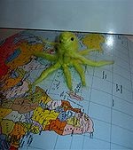

De: La Frikipedia, la enciclopedia extremadamente seria.
De: La Frikipedia, la enciclopedia extremadamente seria. De: La Frikipedia, la enciclopedia extremadamente seria.
| De la serie Países del planeta tierra: | |||||
| Mi casa | |||||
|---|---|---|---|---|---|
| |||||
| Lema: Yiaaaaaaaaaaaaaaaah! | |||||
| Himno: Kung-Fu Fighting
| |||||
| 
| |||||
| Capital | R'lyeh | ||||
| Mayor ciudad | El Vaticano | ||||
| Lenguas oficiales | sindarín y quenya | ||||
| Gobierno | Dictadura déspota malvada | ||||
| Su Magnánima maldad El Gran | Cthulhu | ||||
| Área | Asia | ||||
| Población | Actualmente en algún plano astral, lo que dificultad gravemente censarla | ||||
| Moneda | Giles | ||||
| Zona horaria | Siempre son las 12 de la noche | ||||
| Dominio Internet | .cth | ||||
| Código telefónico | 001337
| ||||
| No lo visites a menos que sea el último país que te queda por visitar | |||||
Gran país primermundista compuesto de los territorios que conforman las fronteras entre otros países. Sus habitantes existen en el plano astral para no ensuciar las (estrechas) calles. Es un país tan grande, tan poderoso y tan chachipiruli que todo el mundo nos oculta su existencia; pero la Frontera está ahí, existe.
Actualmente en guerra con la mitad del planeta (la otra mitad desconoce aún a día de hoy su existencia) se mantiene intacto gracias a que las bombas nucleares aun no han desarrollado un sistema de navegación GPS capaz de localizarlo.
El motor principal de la economía de Frontera son los peajes, que conforman el 90% de su PIB (seguidos de lejos por las exportaciones de juegos de rol y maldad en un 7,5% y un Pi% respectivamente, el resto a día de hoy es desconocida su procedencia ante la dificultad de encontrar a un funcionario del Ministerio de Economía en este plano). Actualmente, según EEUU va aflojando el bloqueo internacional sobre Frontera por "actividades malvadas" ante la falta de pruebas, y el fracaso de un ataque nuclear a escala mundial; ha comenzado a aumentar exponencialmente el número de inversiones en el País dadas las grandes ventajas fiscales del mismo. Empresas como Hasecorp ya preparan mudarse a Frontera. Algunas de dichas ventajas son:
Las pocas desventajas de Frontera son la escasa mano de obra (aun intentamos buscar a sus habitantes con google) y el alto precio del suelo (por la escasez del mismo), lo que ha catapultado a R'lyeh a codearse con Madrid y Barcelona en el raking de ciudades con el metro octarino más caro del Multiverso. Actualmente el presidente Cthulhu ha iniciado un programa de repoblación de Frontera para atraer empresas extranjeras con el aumento de mano de obra esclava así como aumentar el número de sacrificios pues Cthulhu empezaba a tener hambre.
La política exterior (e interior) del país sólo le permite tener un número reducido de aliados. La escueta lista de los paises con embajada en Frontera es tal que así:
Autor(es):